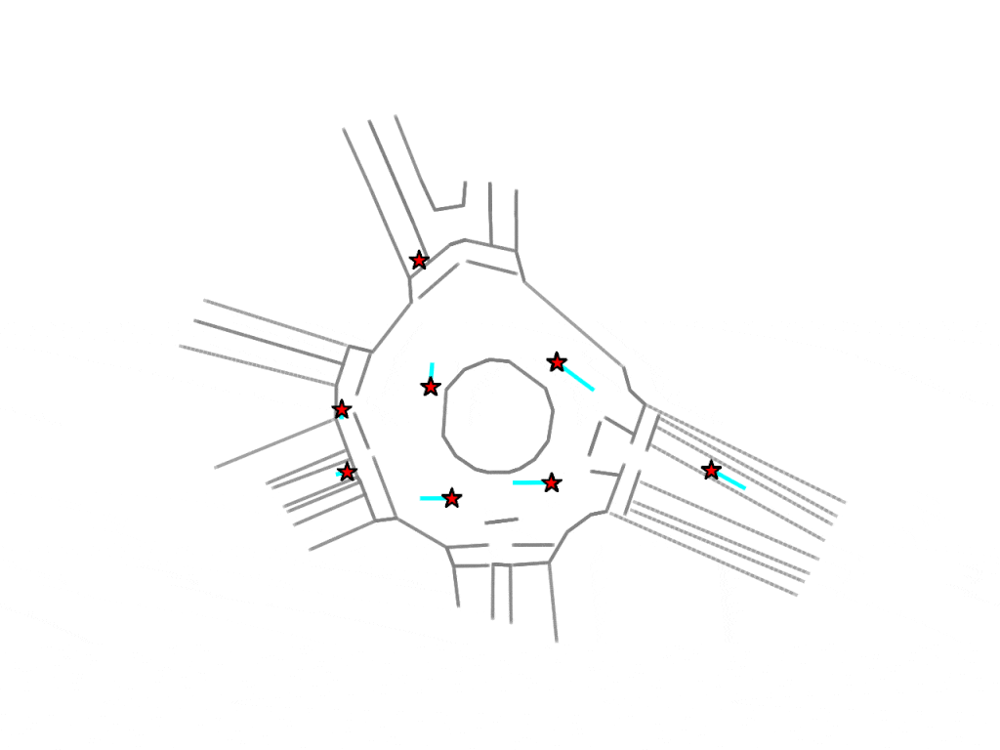

|
I am a Master's student working on computer vision at Koc University, advised by Fatma Guney. I received my Bachelor's degree from Middle East Technical University in 2022. My current research interest is in point tracking, object discovery, and object-centric learning. Email / CV / Github / X (Twitter)
|
{kind=link}
 |
Gorkay Aydemir, Weidi Xie , Fatma Guney EVAL-FoMo Workshop ECCV, 2024 We assess the geometric awareness of vision foundation models for long-term point tracking. Our results show that Stable Diffusion and DINOv2 excel in zero-shot settings, with DINOv2 matching supervised models after training in lighter setup, highlighting its potential for correspondence learning. |
|
Gorkay Aydemir, Weidi Xie , Fatma Guney NeurIPS, 2023 This paper presents SOLV, the first fully unsupervised technique for segmenting multiple objects in real-world video sequences using an object-centric approach. Through a unique masking strategy and slot merging based on similarity, our method effectively segments varied object classes in YouTube videos. |
|  |
Gorkay Aydemir, Adil Kaan Akan, Fatma Guney ICCV, 2023 This paper presents ADAPT, a method for predicting trajectories of all agents in complex traffic scenarios, ensuring both efficiency and accuracy. By utilizing dynamic weight learning and an adaptive head, ADAPT offers superior performance over existing multi-agent methods on Interaction dataset, with reduced computational demands. |
 |
Gorkay Aydemir, Adil Kaan Akan, Fatma Guney Arxiv preprint, 2022 This paper introduces a temporal graph representation to improve predictions of future agent locations in dynamic traffic scenes for self-driving applications. |
|
Based on a template by Jon Barron.
|